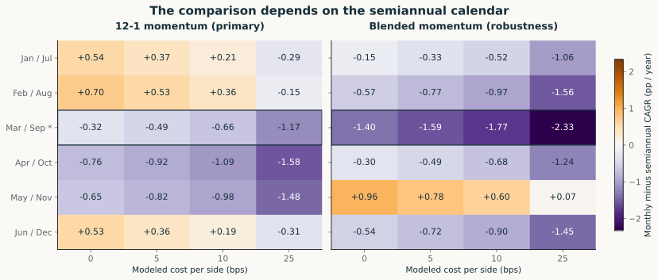
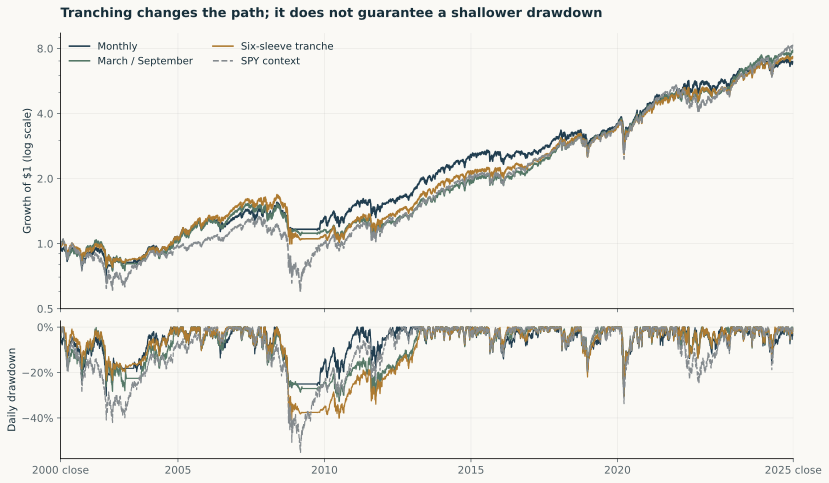
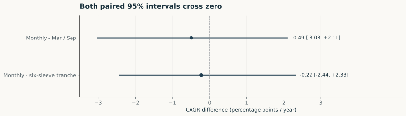
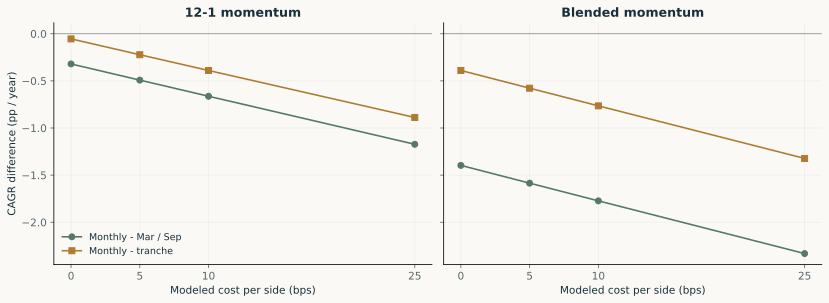

ETF validation study · retrospective · 2001–2025
Calendar Sensitivity
and Paired Uncertainty
The monthly–semiannual comparison changes sign when the semiannual calendar changes.
At 5 bps per side, the 12–1 CAGR difference ranges from −0.92 to +0.53 percentage points per year across six schedules. The designated March/September comparison is −0.49.
Report every calendar and cost

| Comparator | Comparator CAGR | Monthly − comparator | Comparator max DD |
|---|---|---|---|
| Loading validated results… | |||
Controls remain disabled until the complete saved result is checked.
Pool six calendars without re-equalizing their capital
Each semiannual sleeve receives one-sixth of initial capital. First trades occur on 3 January 2000. The sleeves then run autonomously: their capital drifts, no transfer occurs at the reporting anchor, and their trades are not netted against each other.

Returns, risk and activity
| Portfolio | CAGR | Daily max DD | Sharpe | Tracking error | SPY beta | Traded NAV/year |
|---|---|---|---|---|---|---|
| Monthly | 8.02% | -30.32% | 0.519 | 9.97% | 0.671 | 5.04× |
| March / September | 8.51% | -32.81% | 0.557 | 8.68% | 0.718 | 1.86× |
| Six-sleeve tranche | 8.24% | -40.91% | 0.541 | 7.96% | 0.740 | 1.93× |
| SPY context | 8.76% | -55.19% | 0.522 | 0.00% | 1.000 | 0.00× |
Sharpe, tracking error and beta use 300 monthly simple returns and captured monthly RF. Tracking error and beta reference SPY. Drawdown uses daily closes. Trading counts buys plus sells. Cash earns zero.
Show uncertainty beside the estimate
| Comparison | Estimate | Paired 95% interval |
|---|---|---|
| Monthly − March/September | -0.49 | [-3.03, +2.11] |
| Monthly − tranche | -0.22 | [-2.44, +2.33] |

Six- and 24-month block sensitivity also crosses zero. The method samples realized portfolio returns, not asset-price histories or new selection decisions. Prior design choices and nonstationarity remain relevant.
Costs remain part of the comparison

A/B/C mechanism appendix
A refreshes names and weights semiannually; B freezes names and cash slots but resets monthly; C refreshes both monthly. Primary CAGR: A 8.51%, B 8.63%, C 8.02%. The sequential differences describe conditional comparisons and do not uniquely attribute performance to causes. Exact HAC and bootstrap units are retained in the saved summary.
Inspect appendix calculations2026 partial-year case
Through 2 October 2026: monthly 22.28%, March/September 9.29%, tranche 16.70%. Continuous accounts; not annualized; excluded from primary inference.
Validation judgment
Accept the calculation as reconciled historical evidence. The sign of the frequency comparison is sensitive to the semiannual calendar, and the primary uncertainty intervals do not establish a general ranking. Tranching is a tested calendar-diversification construction with a disclosed drawdown tradeoff.
Retrospective vendor-adjusted price and next-open proxies; fixed costs, zero-interest cash and changing ETF sectors. The same agent authored the separate implementations. Source prices and achievable fills remain unverified, and personal mastery requires actual owner review.
Inspect lineage, checks and design decisions →